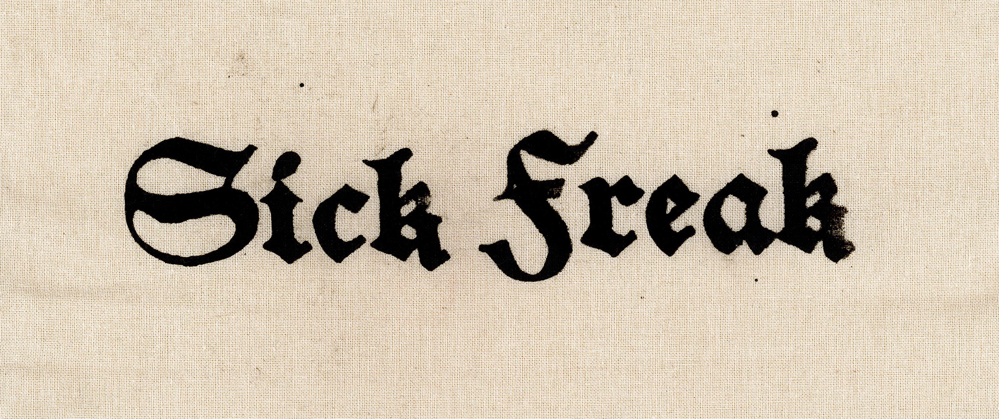
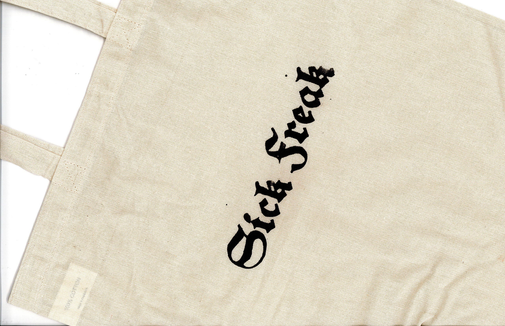
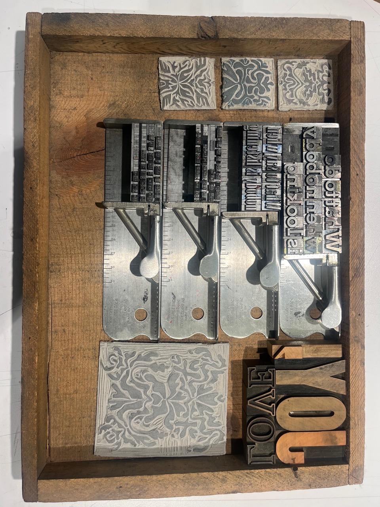
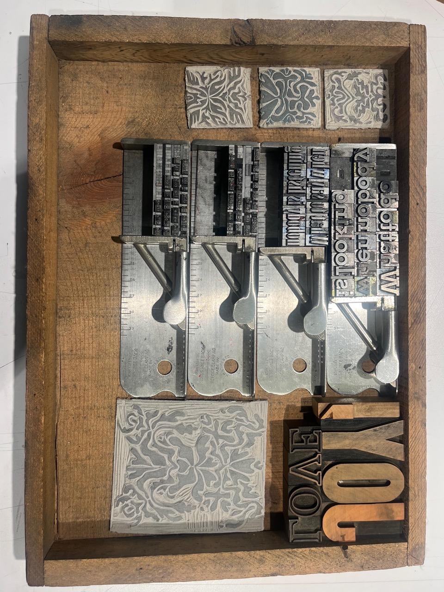
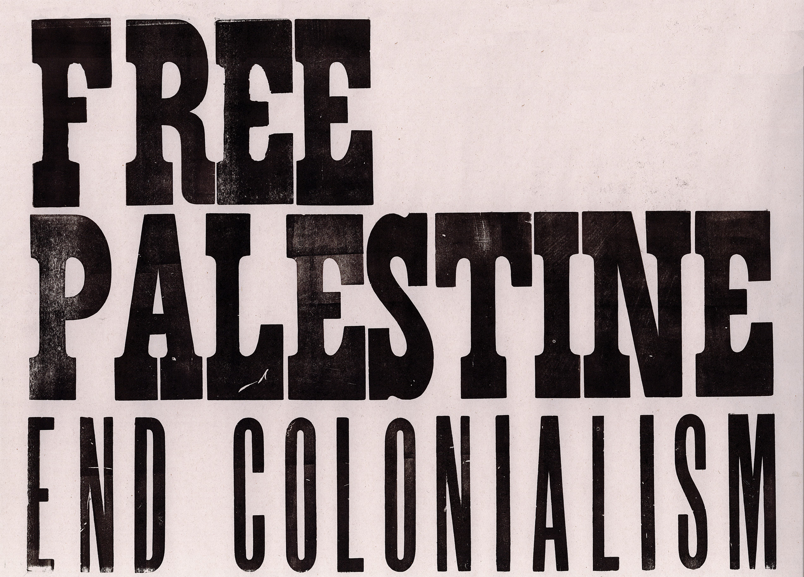
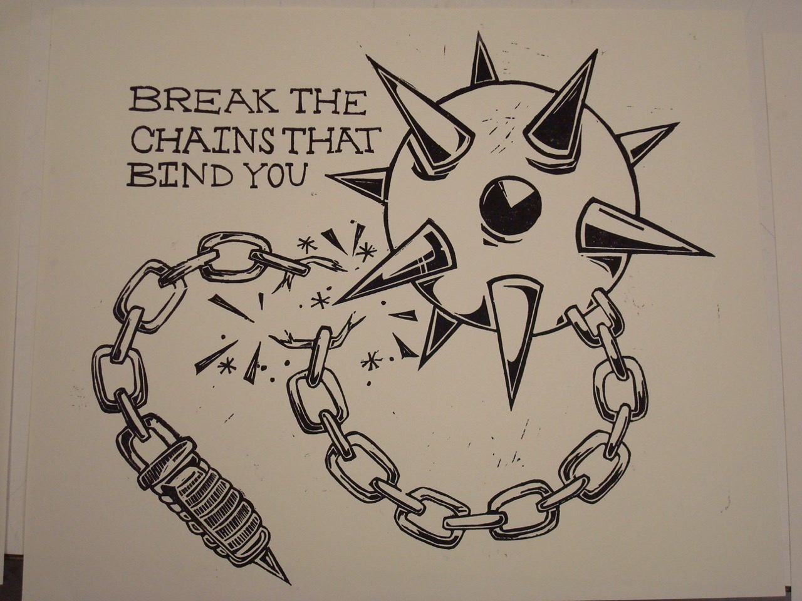

blood, sweat, and tears!! i am so serious, printmaking is a labor of love for me. i find it completely enthralling, reduction printmaking is my favorite. letterpress is also a passion of mine, i love physical type! it takes some mental fortitude but is so rewarding because it really creates a look that can't be acheived any other way. my grandmother liked to save and reuse as much as she could, she would often give me old projects she didn't think she would finish or yarn and fabric scraps. the prints on this page that are on floral fabric were excess clippings from her quilting projects. my art is an act of love and joy, how to share the beauty that is inside, how to give the love i feel to you, she was the same, sharing that beauty is so important.
one planet, semiquincentennial broadsides. what an awesome name, a mouthful! i made prints combining lithography for image and screen print for type that were inspired by An Ode We Owe by Amanda Gorman. these prints were shown in concord massachusetts in an exhibit commemorating the 250th anniversary of the american revolution and was highlighting the role that broadsides and printmaking had in the rebellion agaisnt the british in 1775 and in community building in early america.
a clear night in cambridge, was accepted into the boston printmakers 2024 student print exhibition. this was a combined letterpress and reduction print, using both wood and lead type and cut paper. the 2024 exhibit was held at massart and included work from students at 18 colleges and universities in new england.
my club at lesley univeristy, design club, had a screenprinting event with the printmaking club, press 304, and we made multiple designs that were design related and some that were just fun, we had a great turn out and it was a great way to have people come and learn how to screen print and have some cool club merch to take home! we provided tote bags and second-hand t-shirts and encouraged people to bring their own blank clothing to print on.
 these screen printed shirts were a collaboration between me and two friends, in our last few weeks at lesley we wanted to make the most of our studios and make a really fun design that we could share with friends, we came up with the concept, i designed the graphic, we burned the screen and printed together. collaborating on a task like printing 30 t-shirts together is a great way to get some friend time in before graduation.


 

process photo of my lead type set and ready to be printed along with the carved linoleum blocks, i used all of this type to make the yellow zine shown above.
 